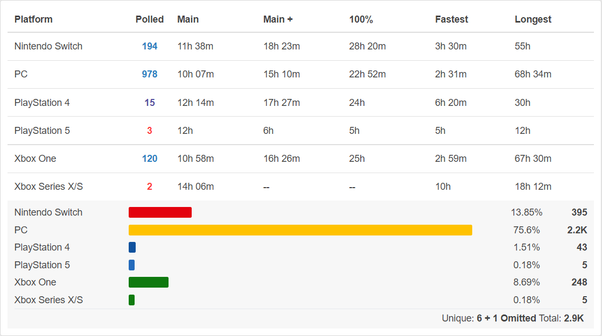

I am going to work on an undergraduate research thesis on the intersection of distributed systems and
computer
science education (visualizing some phenomena may help students to better understand some complex
algorithms). I believe this class will expose me to useful techniques and patterns that can be used to make
data visualization more effective.
I really like the price history graph for each game in the Steam Database. It makes it really easy to
compare sales so that the user can figure out whether they want to wait for a lower price or not.
Particularly helpful is the fact that hovering over different points in the graph displays information
such as whether or not there was a discount, how much the discount was, and what event the discount was
for (e.g "Winter Sale 2020").
One data visualization I dislike?

Completion time by platform for Cuphead | Source
Here is some information about the game Cuphead from howlongtobeat.com,
which is a site that gives information on how long it took people to beat games to various
capacities. The visualization in question is at the bottom of the image.
Here's my problem: I'm not 100% sure what it represents. Maybe the numbers on
the far right (395, 2.2K, etc.) are the number of people, but then why don't they match the "Polled"
numbers in the
table? And why is this chart even necessary? The distribution of platforms used to play the game isn't so
important that it deserved its own whole graphic. Lastly, what does the "Unique: 6 + 1 Omitted" at the
bottom right mean?
There is just a lot that I am unsure about when looking at this graphic.